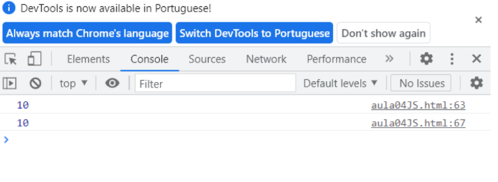
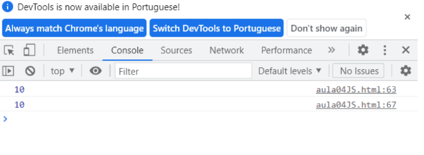

Vamos explicar agora com mais detalhes sobre variáveis globais e locais, juntamente com os tipos de variáveis: var, let e const.
São como informações que podem ser acessadas de qualquer lugar dentro de um programa. É como se você escrevesse uma nota e a deixasse em uma mesa central para todos verem. Variáveis globais podem ser acessadas e modificadas de qualquer lugar no programa, o que pode ser conveniente, mas também pode levar a problemas se não forem usadas com cuidado.
 

São como informações que só podem ser vistas ou usadas em uma parte específica do programa.
É como se você escrevesse uma nota e a deixasse em uma gaveta trancada.
Variáveis locais são úteis porque mantêm as coisas organizadas e evitam confusão no programa.
Elas só podem ser acessadas dentro da parte específica do programa onde foram definidas.
Abaixo podemos ver o que acontece quando se tenta usa-la indevidamente:


É uma maneira antiga de declarar variáveis em JavaScript. As variáveis declaradas com var podem ser globais ou locais, dependendo de onde são declaradas. Uma desvantagem do var é que ele pode levar a problemas de escopo (onde uma variável é acessada) devido ao seu comportamento de içamento (hoisting), o que pode tornar o código mais difícil de entender.
É uma maneira mais moderna e segura de declarar variáveis em JavaScript. As variáveis declaradas com let têm escopo de bloco, o que significa que elas só podem ser acessadas dentro do bloco de código onde foram declaradas. Isso ajuda a evitar problemas de escopo e torna o código mais seguro e fácil de entender.

É semelhante ao let, mas as variáveis declaradas com const são constantes, o que significa que seus valores não podem ser alterados depois de serem atribuídos. Isso torna o código mais seguro, pois indica claramente que o valor da variável não mudará durante a execução do programa.